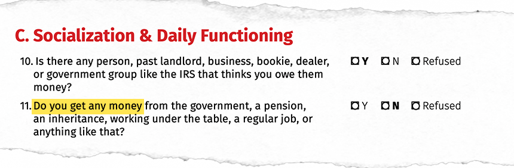
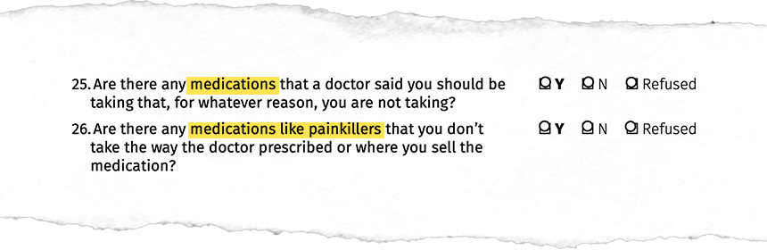

The VI-SPDAT is a pre-screening tool used by county officials to assess the homeless population which assigns each person a vulnerability index. This impacts the type of resources they are given by the government. It is currently used by the U.S. Homelessness Services.
Thanks to a 2020 report by Courtney Cronley, the VI-SPDAT is now being scrutinized for biases.
The problem
According to The National Alliance to End Homelessness, women account for only 40% of the homeless population in the United states. This means that men are more likely to be homeless than women.
Source: National alliance to end homelessness
Similarly, when compared to the total population of the U.S., minorities are overrepresented in the homeless population, meaning these minorities are more likely to be homeless.
| Homeless population | Percent of Homeless Population | Percent of U.S. Population | |
|---|---|---|---|
| White | 280612 | 39.5% | 76.3% |
| Black | 228796 | 32.2 | 13.4 |
| Hispanic | 130348 | 18.3 | 18.5 |
| Multiracial | 35680 | 5.0 | 2.8 |
| Native American | 18935 | 2.7 | 1.3 |
| Pacific Islander | 8794 | 1.2 | .2 |
| Asian | 7638 | 1.1 | 5.9 |
Source: National Alliance to End Homelessness & U.S. Census Bureau
Researcher Courtney Cronley conducted a study on the VI-SPDAT which found that, despite men and minorities being more likely to be homeless, white women were consistently ranked the most in-need by the assessment while Black men were considered least in-need.
This is important because it means that white women are the ones that recieve the most housing resources.
Here's how it happens
The VI-SPDAT is a physical assessment, similar to a printed test in a classroom, given by aid workers to homeless people.
Oftentimes, aid workers will visit homeless villages(like the one pictured to the right) to administer VI-SPDAT tests.
To visualize this scenerio, let’s assume aid workers use the VI-SPDAT assessment on this hypothetical group of homeless individuals:
Use the sliders below to adjust a given population of homeless idividuals.
By the end of this scenerio, you will see which group recieves the most help.
Key0100 homeless people
White
Black
The simulation is based on a 2020 study which ignores non-binary genders.
When aid workers administer the VI-SPDAT test, they are given a script to let participants know the purpose of the test, the duration, and whether or not they would like to participate.
This already leaves out some people who do not trust aid workers enough to participate in the test. According to Cronley’s report, Black individuals are more likely not to accept aid.
Some of the following questions then ask about a person’s history. This starts skewing the test towards women who are more likely to have recently used emergency rooms, ambulance services, and crisis services.

White people are also more likely to report being homeless due to trauma as compared to Black people. This nets them another point on the assessment.

In some instances on the VI-SPDAT, Black people actually reported a higher probability of protective factors. For example, a higher percentage of Black people reported receiving money or some form of financial support while homeless.
This leads to white people gaining more traction in the assessment.
In general, white women scored the highest in almost all the sub scales of the VI-SPDAT followed by white men then Black women and men. This included aspects like self-reporting that they were on medication or that drug use was a cause of their loss of housing.
This model isn't perfect. It's based on limited data gathered by one study by Courtney Cronley and can only show a rudimentary view of who may be assessed most at-risk by the VI-SPDAT.
According to the model on the left, these individuals are deemed most fit to recieve aid:
% of white women
% of white men
% of Black women
% of Black men.
Regardless of if individuals part of the VI-SPDAT are biased or not, this simulation shows that the test as a whole is skewed towards white women. Why not add questions that assess the unique risks associated with men? Or the ones associated with Black people? If the VI-SPDAT were fair, we would expect to see an even distribution of aid to all people.
So what?
The VI-SPDAT assessment is used in major cities like Los Angeles to distribute resources to their homeless populations. Los Angeles' Mayor Eric Garcetti has made homelessness a top concern for his administration with a plan to use $1.2 billion for homeless assistance in 2016. Similarly, homelessness has become a top concern for cities like San Diego, Seattle, and New York City who all made various efforts to reduce homelessness.
Within the past two decades, housing has emerged as the primary goal in homelessness intervention.
Algorithmic implications
Assessment tools that assist resource distribution efforts, are now being automated using algorithms. One such tool is Pennsylvania's AHA(Allegheny Housing Assistance) Tool.
The AHA tool has tried to improve upon physical assessments like the VI-SPDAT by moving from interview-based approach to an automated assessment. Allegheny County, through studies and research, has consciously to make sure that the AHA tool is better at predicting homeless outcomes when compared to the VI-SPDAT. However, Allegheny County has yet to release a study that assesses how much the AHA tool may replicate the biases inherent in the VI-SPDAT.
This is a very real concern considering both assessments take in similar variables like an individual’s use of emergency services, behavioral history, etc.
As the U.S. shifts to a quantitative assessment approach to housing allocation decisions within homeless services, communities ought to consider homelessness and vulnerability through an intersectional lens in order to better account for how multiple positions of disadvantage reflect vulnerabilities differently.